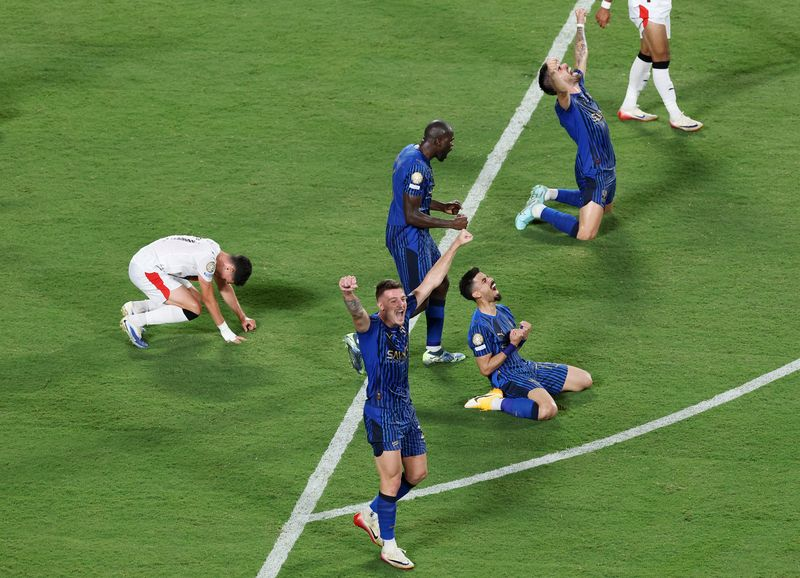

.jpeg)
Perempat Final Piala Dunia Antar Club FIFA: Tumbangnya 2 Raksasa Eropa
Amerika Serikat - Piala Dunia Antarklub 2025 berikan kejutan. Dua raksasa Liga Champions yakni Manchester City dan Inter Milan, tumbang di awal fase gugur!
Piala Dunia Antarklub 2025 jalani babak 16 besar. Kejutan demi kejutan terjadi pada Senin (1/7).
Inter Milan, yang notabenenya dua kali jadi finalis Liga Champions dalam empat musim terakhir harus angkat koper. Si Ular takluk dari Fluminense 0-2. Wakil asal Brasil itu sanggup buat Inter mati kutu. Meski Inter bisa mendominasi penguasaan bola, Thiago Silva dkk lebih efektif dalam menuntaskan peluang.
Manchester City, juara Liga Champions di tahun 2023 juga harus angkat koper di babak 16 besar Piala Dunia Antarklub 2025. Bermain sampai babak perpanjangan waktu, The Citizens takluk dari Al Hilal! Wakil Arab Saudi itu berikan perlawanan ketat. Skor sama kuat 2-2 di waktu normal, pasukannya Simone Inzaghi menang 4-3 setelahnya.
Masih ada raksasa Liga Champions lainnya yang amankan tempat di peramptfinal. Ada Chelsea, PSG dan Bayern yang keduanya akan berduel, serta Real Madrid vs Juventus akan main pada Rabu (2/7) dini hari WIB serta Dortmund hadapi Monterrey di pagi harinya.
Berikan Pendapat Anda